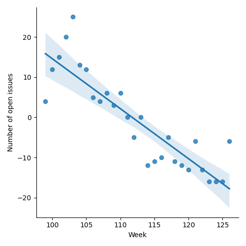
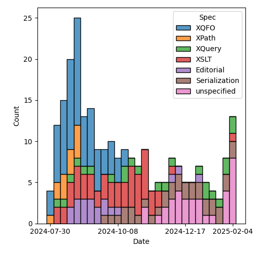
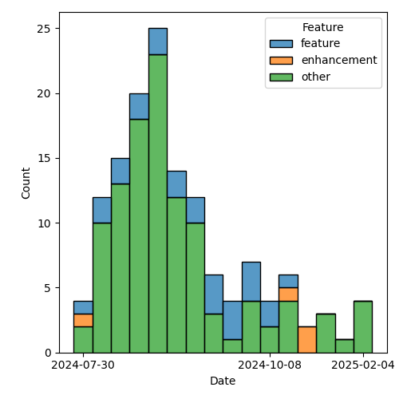

QT4 CG Meeting 109 Minutes 2025-02-11
Meeting index / QT4CG.org / Dashboard / GH Issues / GH Pull Requests
Table of Contents
- Draft Minutes
- Summary of new and continuing actions
[0/10] - 1. Administrivia
- 2. Technical agenda
- 2.1. PR #1769: Add links from processing model diagrams
- 2.2. PR #1772: 1770 Default priority of rules with a union pattern
- 2.3. PR #1773: 402 Change the semantics of intersect and except in patterns
- 2.4. PR #1782: 1776 Add lookup patterns using ? and ??
- 2.5. PR #1784: 1781 Drop obsolete material from XSLT spec
- 2.6. Issue triage
- 2.6.1. Issue #1537: XSLT: local functions within an enclosing xsl:mode
- 2.6.2. Issue #1584: Review the XML Schema and RELAX NG schemas for XSLT 4.0 for compatibility
- 2.6.3. Issue #1631: xsl:apply-templates (without select) should allow inline content
- 2.6.4. Issue #1698: Allow select attribute for xsl:call-template instruction
- 2.6.5. Issue #1724: Allow @copy-namespaces on <xsl:mode>?
- 2.6.6. Issue #1742: Maps constructed using streamed xsl:fork instruction should not be ordered
- 2.6.7. Issue #1777: Shallow copy in XSLT with maps and arrays
- 3. Any other business
- 4. Adjourned
Draft Minutes
Summary of new and continuing actions [0/10]
[ ]QT4CG-082-02: DN to work with MK to come to agreement on the fn:ranks proposal[ ]QT4CG-097-02: MK to make the XSD schema component references into links to XSD[ ]QT4CG-107-01: MK to amend PR 1722 so the expansion of focus functions includes the return typeitem()*[ ]QT4CG-107-05: JLO and DN to consider a proposal for system defined records.[ ]QT4CG-109-01: NW add JSON to the processing model diagrams along side XML[ ]QT4CG-109-02: NW to look again at adding tooltips to the diagrams
1. Administrivia
1.1. Roll call [8/13]
Regrets: CG, WP, JLO, BTW.
[X]David J Birnbaum (DB)[X]Reece Dunn (RD)[ ]Sasha Firsov (SF)[ ]Christian Grün (CG)[X]Joel Kalvesmaki (JK)[X]Michael Kay (MK)[ ]Juri Leino (JLO)[X]John Lumley (JWL)[X]Dimitre Novatchev (DN)[ ]Wendell Piez (WP)[X]Ed Porter (EP)[ ]Bethan Tovey-Walsh (BTW)[X]Norm Tovey-Walsh (NW). Scribe. Chair.
1.2. Accept the agenda
Proposal: Accept the agenda.
Accepted.
1.2.1. Status so far…
These charts have been adjusted so they reflect the preceding six months of work.

Figure 1: “Burn down” chart on open issues

Figure 2: Open issues by specification

Figure 3: Open issues by type
1.3. Approve minutes of the previous meeting
Proposal: Accept the minutes of the previous meeting.
Accepted.
1.4. Next meeting
The next meeting is planned for 18 February 2025.
CG gives regrets 18 February.
1.5. Review of open action items [6/10]
(Items marked [X] are believed to have been closed via email before this agenda was posted.)
[ ]QT4CG-082-02: DN to work with MK to come to agreement on the fn:ranks proposal[ ]QT4CG-097-02: MK to make the XSD schema component references into links to XSD[X]QT4CG-103-01: MK to add an example of showing all the properties for an untyped node.- Withdrawn: “Too difficult”
[ ]QT4CG-107-01: MK to amend PR 1722 so the expansion of focus functions includes the return typeitem()*[X]QT4CG-107-02: MK to propose adding the "duplicates" option (frommap:merge) tomap:buildandmap:of-pairs[X]QT4CG-107-03: MK to propose amending all the functions that return ordered maps so that when duplicates are found, the key of the combined entry is taken from the first of the duplicates.[X]QT4CG-107-04: MK to review CG’s comment to alignfn:map-mergeby removing the reference to random number generator and fixing a typo.[ ]QT4CG-107-05: JLO and DN to consider a proposal for system defined records.[X]QT4CG-108-01: JWL look at the extra fn: prefixes introduced by the stylesheets in the binary spec[X]QT4CG-108-02: NW to add links and tooltips to the new processing model diagrams
1.6. Review of open pull requests and issues
1.6.1. Blocked
The following PRs are open but have merge conflicts or comments which suggest they aren’t ready for action.
1.6.2. Merge without discussion
The following PRs are editorial, small, or otherwise appeared to be uncontroversial when the agenda was prepared. The chairs propose that these can be merged without discussion. If you think discussion is necessary, please say so.
- PR #1767: 1729/1737 Fix grammar for "declare record"
- PR #1765: 1751 Clarify BOM handling
- PR #1761: 1752 Correct return type of fn:partition()
- PR #1783: 1779 Make CharRef XQuery-only (added during the meeting)
Proposal: merge these PRs without discussion.
Accepted.
1.6.3. Close without action
It has been proposed that the following issues be closed without action. If you think discussion is necessary, please say so.
- Issue #877: Inconsistency in XQFO comparator functions/operators with recursive rules
- Issue #755: with expression; chaining and concatenation
Proposal: close these issues without further action.
Accepted.
1.6.4. Substantive PRs
The following substantive PRs were open when this agenda was prepared.
- PR #1769: Add links from processing model diagrams
- PR #1772: 1770 Default priority of rules with a union pattern
- PR #1773: 402 Change the semantics of intersect and except in patterns
- PR #1782: 1776 Add lookup patterns using ? and ??
- PR #1784: 1781 Drop obsolete material from XSLT spec
- PR #1766: 1715 Drop array bound checking
- PR #1783: 1779 Make CharRef XQuery-only
- PR #1778: 1456 Lookup expressions filtered by type
- PR #1763: 1716 Generalize syntax of arrow expressions
- PR #1740: 1725b Further elaboration of duplicates handling in maps
- PR #1735: 1341 Drop $position callback from many functions
2. Technical agenda
2.1. PR #1769: Add links from processing model diagrams
See PR #1769.
ACTION QT4CG-109-01: NW add JSON to the processing model diagrams along side XML
ACTION QT4CG-109-02: NW to look again at adding tooltips to the diagrams
- NW: This PR is unlikely to run afoul of merge conflicts, so let’s just leave it open.
2.2. PR #1772: 1770 Default priority of rules with a union pattern
See PR #1772.
MK introduces the PR.
- MK: The priority rules for union patterns have become more complicated over time.
- … Treating them as separate template rules with a different priority has odd
consequences for
xsl:next-match - … And in 4.0 we’ve invented new things that are equivalent to union patterns.
- … Trying to fix various edge cases lead me to take an axe to it.
- … Treating them as separate template rules with a different priority has odd
consequences for
- JK: I like the proposal. I tried to replicate the double-triggering of
xsl:next-matchbut failed. - MK: There are test cases that do it, but it’s very obscure.
- JWL: I agree with this one. If you’re playing around with default priorities in unions where it’s starting to get complicated, you have to be on the ball. This will simplify things.
Proposal: Merge this PR.
Accepted.
2.3. PR #1773: 402 Change the semantics of intersect and except in patterns
See PR #1773.
- MK: This is in the same area, but is completely separate. These are the rules for matching.
- … The problem here is that the current specification of intersect and except does something so woefully unexpected that we should treat it as bug.
- … The incompatibility is explained in a note.
Proposal: Merge this PR.
Accepted.
2.4. PR #1782: 1776 Add lookup patterns using ? and ??
See PR #1782.
Not ready for discussion.
2.5. PR #1784: 1781 Drop obsolete material from XSLT spec
See PR #1784.
- MK: Hopefully, this is uncontroversial.
- … A lot of section numbers have changed, so the diff is hard to follow.
- … Section 23 (processing JSON data) has gone and so has Appendix B (XML representation of JSON)
- … These were basically historical relics.
Proposal: Merge this PR.
Accepted.
2.6. Issue triage
2.6.1. Issue #1537: XSLT: local functions within an enclosing xsl:mode
- MK: I’d make it optional; I’ve encountered it, and several users have asked.
- JWL: I think the issue is go for effectively the enclosed mode being a scope;
in which case functions, variables could be in there. How far do we go?
- Somtimes you want scoped local variables and you need tunnels all the way down.
2.6.2. Issue #1584: Review the XML Schema and RELAX NG schemas for XSLT 4.0 for compatibility
- NW: I’ll do it closer to the end of the process.
2.6.3. Issue #1631: xsl:apply-templates (without select) should allow inline content
- JWL: I think we should drop it; there are easy enough alternatives.
- MK: I agree.
- DN: I think we shouldn’t discuss an issue if the original author isn’t present.
- NW: I think it’s more important to make progress.
2.6.4. Issue #1698: Allow select attribute for xsl:call-template instruction
- MK: I’ve vacillated on this. When I see an
xsl:for-eachjust to change the context for a template, that’s horrible. But then there’s debate about where the context setting goes. Outside, it’s just a different way of spelling “for each”. Inside has more appeal but is less generic. - JK: I vote “required-optional”. We can already do this, but maybe someone will write a proposal.
- RD: I concur it should be optional. I wonder if it’s more expressive to have the with-context as an equivalent of with-param. Putting the context within the call-template.
- MK: That’s one of the suggestions.
- MK: Another question here is to what extent we want to integrate the idea of a
context value in to XSLT. It was introduced for XQuery because people doing
databases have always wanted an expression beginning with “/” to search the
whole database not just one document.
- … If we’re adding the ability to set the context here, do we want to allow it to be a general value not just an item.
- JWL: When talking about where the select would go, do we still have the proposal for a form of call-template that’s an extension of an expression?
- MK: Yes, there’s probably a relation to it.
2.6.5. Issue #1724: Allow @copy-namespaces on <xsl:mode>?
- JK: For the purposes for triage, I’d vote optional.
- MK: I think my main reservation is that when people want to remove namespaces,
they don’t quite know what they’re asking for.
- … The related issues have to do with copying with a change of namespace.
- DB: That’s related, but I don’t think it subsumes this issues.
2.6.6. Issue #1742: Maps constructed using streamed xsl:fork instruction should not be ordered
- MK: In a sense, it’s subsumed by a general issue that we have to review
streamability. We’ve neglected the whole area.
- … We can’t close this without some resolution.
2.6.7. Issue #1777: Shallow copy in XSLT with maps and arrays
- MK: This is the area I’m currently working on. It’s required that we do
something in this area.
- … I’m currently trying to write a recursive decent processor on JSON that I hope will inform proposals in this area.
3. Any other business
None heard.